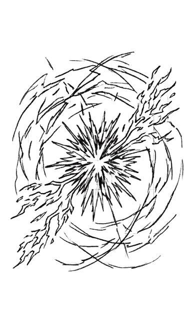

Двенадцатые сутки наблюдения...
\\ Система : "ГЛАЗ"
Приоритет : наивысший
Тип : множественные физические объекты
Статус : обнаружены
Количество : определяется
Угроза : неизвестна
Действие : немедленный анализ \\
Сообщение одновременно поступило во все аналитические и командные центры Альянса. На несколько
секунд операторы решили,
что произошёл сбой. Система «ГЛАЗ» никогда прежде не формировала подобных отчётов. Особенно
после стольких суток
наблюдения за единственным объектом. Однако уже через несколько секунд начали поступать первые
уточнения.
\\ Система : "ГЛАЗ"
Приоритет : ЧРЕЗВЫЧАЙНЫЙ
Статус : обнаружены
Тип : множественные физические объекты
Размер объектов : крупные, малые
Количество крупных : 11
Количество малых : более 20
Угроза : неизвестна
Действие : немедленный анализ \\
В аналитических центрах мгновенно стихли все посторонние разговоры; воздух словно стал плотнее,
каждый понимал — это не
ошибка.
На центральных экранах начали формироваться первые изображения. Объекты находились в том же
секторе, где последние дни
наблюдался загадочный разведчик. Именно это заставляло нервничать сильнее всего. Потому что
совпадением такое уже не
выглядело.
Следующее обновление поступило спустя несколько секунд.
\\ Система : "ГЛАЗ"
Количество средних объектов: 8
Количество малых объектов : более 40
Статус : уточняется \\
Через мгновение ещё одно.
\\ Система : "ГЛАЗ"
Количество малых объектов : более 70
Статус : уточняется \\
К этому моменту в залы управления уже спешно входили дежурные офицеры, аналитики и руководители
смен. Кто-то ещё
надеялся на ошибку. Кто-то пытался найти объяснение происходящему. Но цифры в отчётах продолжали
расти.
\\ Система : "ГЛАЗ"
Количество малых объектов : более 110
Статус : уточняется \\
На экранах начали появляться первые визуальные модели. Одиннадцать крупных объектов сохраняли
неподвижное построение.
Средние были рядом. Малые же постепенно занимали пространство вокруг них. Со стороны это
напоминало рой, собирающийся
вокруг более крупных центров.
Несколько аналитиков переглянулись — слишком организованно, слишком упорядоченно, это уже не
слайность.
Окончательное сообщение:
\\ Система : "ГЛАЗ"
Приоритет : ЧРЕЗВЫЧАЙНЫЙ
Статус : подтверждено
Тип : организованная группа физических объектов
Дополнение к отчёту
Структура группы :
— сверхкрупные объекты : 2
— крупные объекты : 9
— средние объекты : 16
— малые объекты : более 900 , уточняется
Вероятность единого управления : 96.4%
Предварительное заключение : объекты действуют согласованно
Вероятность случайного появления : 0.00003%
Угроза : высокая вероятность
Действие : непрерывное наблюдение и анализ \\
Тишина в зале стала гнетущей; кто-то машинально сжал кулак, другой замер над консолью, боясь
нарушить
напряжение.
Ситуация развивалась со стремительной, почти пугающей быстротой.
Объединённый Флот Альянса вышел из подпространства точно в расчётной точке — безупречно, словно
единый организм. Весь
флот состоял исключительно из кораблей класса «А» — полностью автоматических, без единой живой
души на борту. В
сражениях люди больше не рисковали своей жизнью. Их место заняли дроиды: операторы, наводчики,
штурманы, технические
работники. Командовали кораблями высококлассные тактические дроиды, способные мгновенно
анализировать обстановку,
обмениваться данными и принимать решения в доли секунды. Всё было связано в единую, надёжную
сеть. Каждый дроид-командир
анализировал обстановку, связывался с другими дроидами-командирами, сообщал данные в командный
центр флота и при
необходимости имел право действовать исходя из сложившейся ситуации. Сценарии битвы при участии
только разумных машин
против врага отрабатывались Альянсом на многочисленных учениях. Результаты были на уровне,
позволяющем в битвах не
рисковать жизнями живого экипажа а предоставить опасные задания только машинам.
Однако истинное стратегическое командование осуществлялось не с мостиков боевых кораблей. Оно
велось издалека — со
станции-штаба, расположенной позади основных сил на тщательно выверенном расстоянии. Достаточно
близко, чтобы видеть
поле боя чётко, и достаточно далеко, чтобы остаться в безопасности. Именно оттуда полковник
флота Корсы Нилл Винсен
руководил всей операцией. Нилл Винсен был опытным руководителем своей системы, чётко и ясно
распределять роль каждого
участника в любой операции. Именно ему единогласно поручили командовать всем обьединённым флотом
в этой ситуации.
Его правой рукой был майор Эванс Боэлл, командир флота Элайи. Эванс Боэлл также был опытнейшим
командиром своей системы,
непревзойдённым тактиком с быстрым аналитическим умом. Он был способен видеть всю ситуацию
целиком, в то же время
замечать мелкие незначительные детали и быстро просчитывать возможные развития ситуаций.
Левой рукой —
майор Сид Вишес, командир флота Лиары. Сид Вишес всегда смотрел на любую ситуацию с двух
сторон. Был способен
здраво сомневаться в каждом решении, сопоставляя все "за" и "против".
Боевые корабли Обьединённого флота уже стояли в безупречном боевом порядке. Где-то в глубине
строя тихо гудели реакторы,
готовые в любой момент выплеснуть всю свою мощь. Впереди, словно стальной щит, замерли крейсера
и фрегаты, прикрытые
спереди защитными установками «З.О.Н.Т.», готовыми в любой момент развернуть невидимую стену
энергии. Чуть позади,
словно стаи хищных птиц, застыли «коробки» с истребителями, перехватчиками и штурмовиками,
готовыми отразить любую атаку
мелких обьектов врага либо атаковать звеньями назначеные цели. Строй разбавляли тяжёлые
устаревшие линкоры,
повернувшиеся к противнику бортами, оголив в его сторону чрева с тяжёлыми плазменными
орудиями.
Шла последняя сверка систем, тонкая корректировка позиций, проверка связи между боевыми
кораблями и командным центром.
На мостике станции-штаба каждый был занят своими обязанностями. Нилл Дикен, Эванс Боэлл и Сид
Вишес стояли перед
главным мониторо, на котором целиком отображалось всё поле предстоящей битвы. На их лицах
застыли сосредоточенность,
внимательность и отблески света монитора.
Поскольку ничего не было известно о противнике — ни о его вооружении, ни о защите, ни о
манёвренности — стратегию
выбрали оборонительную. До тех пор, пока не станет ясно, с кем именно они столкнулись. Это была
отнють не трусость ли
излишняя осторожность. Это был чёткий стратегический совместный план: плотная оборона, пока
пративник не покажет хоть
минимум своих возможностей. И вот тогда майор Эванс Боэлл окунётся в свою стихию быстрых
тактических решений, полковник
Нилл Дикен оперативно отдаст каждому чёткие приказы а майор Сид Вишес сможет просчитывать
возможные действия
противника коректируя будущие действия. Все на своих местах.
В это же время, скрытно и бесшумно, часть флота Элайи уже заняла позицию на левом фланге — это
резерв, на расстоянии,
где враг не мог их обнаружить. Корабли намеренно держали хаотичное построение, прижимаясь к
огромной стене астероидов. В
случае если противник будет сканировать этот сектор, на его радарах группа будет выглядеть
частью каменного поля. Сам
Легард Шедоу находился на борту флагмана «МОЛОТ» в составе группы — на случай если всё пойдёт по
самому худшему
сценарию. Он имел постоянную связь как с Владеком и Серженом, так и с майором Боэллом на
командном пункте.
Резерв флота Корсы держался на значительном удалении позади основных сил Обьеденённого Флота и
станции-штаба. Возглавлял
его сам Владек Курен на своём флагманском крейсере «СКИФФЕР». Он также имел прямую связь со
всеми ключевыми
соединениями. В составе его группы в полной готовности находилась станция «ИГЛА» — последнее
оружие на крайний случай.
На борту «СКИФФЕРА» офицеры молча проверяли системы, каждый понимал — если «ИГЛА» вступит в бой,
значит ситуация стала
критической.
Справа, в тени пустоты, тихо ждала резервная группа флота Лиары под командованием майора Лоул
Блэска. Группа находилась
в прямом подчинении Нилла Дикена, командира объединённого Флота. Она предназначалась для
оперативного перехвата
противника в любой точке возможного прорыва. Сам Сержен, предпочитая быть на расстоянии от
массовых событий, находился на борту своего флагмана
"TORPEDO" в районе своей планеты
Лиарра, оставаясь на связи со всеми соединениями.
Два огромных флота замерли друг напротив друга на расстоянии, пока ещё недоступном для атаки.
Пространство между ними казалось густым и тяжёлым, словно сама пустота затаила дыхание. Миллионы
тонн стали, керамита и
энергии застыли в мёртвой тишине, ожидая первого движения. Ни один корабль не шевелился. Даже
свет далёких звёзд,
казалось, стал двигаться медленнее.
На мостике станции командования Нилл Дикен стоял неподвижно, сцепив руки за спиной. Иногда был
слышен хруст его
пальцев, сдавлеваемых от напряжения. Его лицо, освещённое холодным голубоватым светом
тактического экрана, было
спокойно, но в глазах читалось напряжение. Такое же напряжение веяло и от стоящих рядом Эванса
Боэлла и Сида Вишеса.
Эванс Боэлл медленно постукивал двумя пальцами по краю пульта , это говорило о том, что он
внимательно искал мелкие
детали в построении и поведении противника. А Сид Вишес в свойственной только ему манере,
сложив руки на груди и
подперев подбородок правым кулаком, прищурившись, глубоко погрузился в просчёты возможного
начала. Никто не
произносил ни слова. Слова
сейчас были лишними.
Враг тоже ждал. Никто не знал, чего именно он ждёт — первого шага, первого выстрела, слабости
или, возможно, какого-то
сигнала, понятного только ему. Корпуса-панцири тускло отсвечивали свет далёких звёзд. Никаких
бортовых огней, никаких
выдвижных секций, даже никаких импульсов корректирующих двигателей как на кораблях Альянса.
Сотни его мелких «кораблей»
упорядочив свои траектории роились вокруг более крупных. Построение было завершено. Лишь изредка
в эфире появлялись
короткие сообщения на неизвестном "языке". Позади своего «флота» на приличном расстоянии
расположились два самых крупных
корабля, отличавшихся от всех остальных. Это были массивные сферы в такой же панцерной упаковке
, в разрезах которой
изредка вспыхивали короткие нити молний зеленоватого оттенка. Скорее всего это были координаторы
всего флота.
Тишина давила.
Оставалось только ждать.
И ожидание прервалось.
Впервые за всё время с начала наблюдения один из объектов совершил осмысленное действие в
сторону Альянса.
Сигнал поступил неожиданно.
Один из спутников системы «ГЛАЗ», находившийся ближе всех к противнику, зафиксировал
направленный импульс на стандартной
частоте дальней служебной связи Альянса. Неизвестный передатчик не пытался маскироваться.
Наоборот. Словно специально
выбрал частоту, которую обязательно услышат.
Через несколько секунд сообщение уже лежало на столах аналитиков. Дежурный офицер немедленно
сообщил о происшествии в
центральный командный центр. Практически одновременно поступило автоматическое уведомление
системы наблюдения.
\\ Система : "ГЛАЗ"
Приоритет : наивысший
Источник : неизвестный объект
Тип : направленная передача
Получатель : спутник наблюдения G-184
Совпадение частоты : подтверждено
Вероятность намеренной передачи : 99.7%
Действие : анализ \\
Новость мгновенно разлетелась по всем задействованным центрам. В работу включились аналитики.
Дешифровщики. Лингвисты.
Специалисты по математическим структурам. Учёные.
Однако первоначальный энтузиазм быстро сменился разочарованием. Сигнал оказался предельно
коротким. И постоянно
повторялся. Один и тот же фрагмент.
Снова.
И снова.
И снова.
Никаких координат. Никаких числовых последовательностей. Никаких известных закономерностей. Но
что-то в нём всё же было.
Слишком правильным выглядел повтор. Слишком осмысленной казалась структура.
Один из учёных предложил отказаться от попыток перевести сигнал как язык. Вместо этого данные
начали преобразовывать в
различные формы отображения.
В звуковые спектры.
В цветовые схемы.
В трёхмерные модели.
В графические структуры.
Большинство вариантов не дали ничего. Пока одна из программ визуализации не выдала неожиданную
картину. На экране
появился сложный символ.
Несколько пересекающихся дуг.
Рваные вспышки.
Ломаные линии.
Центральная область напоминала взрыв или всполох энергии. От неё расходились расходящиеся лучи,
похожие одновременно на
молнии и языки пламени.
Некоторое время в зале аналитического центра стояла тишина. Учёные внимательно рассматривали
изображение. Кто-то
предположил обозначение энергии. Кто-то — предупреждение. Кто-то видел в нём карту. Кто-то —
неизвестный алфавитный
знак. Споры становились всё громче. Но единого мнения не было.
Доктор Эммид Баун всё это время молчал. Он сидел неподвижно и внимательно смотрел на
изображение. Настолько долго, что
некоторые уже начали поглядывать на него с любопытством. Его белые усы нервно подёргивались. Он
часто и глубоко моргал,
то и дело поправляя очки, которые, казалось, вонзились ему в переносицу. Затем он медленно
поднялся со своего места, не
отрывая взгляда от экрана. Лицо его уже не было спокойным как ранее. Вся его фигура излучала
невидимое поле твёрдой
уверенности. Именно поэтому следующие слова прозвучали особенно тяжело.
— Коллеги...
Споры мгновенно прекратились. Все повернулись к нему. Эммид ещё несколько секунд смотрел на
изображение. После чего
произнёс голосом человека, познавшего важную тайну:
— Это не карта.
Тишина.
— Не предупреждение.
Он медленно указал рукой на центральную часть символа.
— И не язык.
В помещении стало настолько тихо, что слышалась работа систем вентиляции. Щёлкнуло реле контроля
яркости освещения.
Доктор Баун наконец перевёл взгляд на присутствующих, от этого у некоторых пробежал холодок по
спине. И совершенно
каменным голосом сказал:
— Коллеги... это боевой клич.
Никто не ответил.
